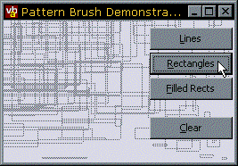

Pattern Brush Sample (12K)
Pattern Brush Sample (12K)
 1 Jul 1999
1 Jul 1999
First Posting

Creating Single Pixel Dotted Lines
How to create dotted lines like the ones used to draw lines in the TreeView control
One of the drawing features which makes many of the Windows controls draw attractively is the use of single pixel on-off dotted lines. For example, the TreeView control uses these to draw lines, and they are often used in bounding box selections and drag and drop operations.
Unfortunately VB doesn't have any built in methods to draw single pixel dotted lines (although you could use, erm, PSet to draw the dots, as long as you didn't mind waiting for a couple of days whilst VB completed drawing the line). This is because Windows doesn't provide a Pens which draw in this style either, and VB's line drawing support exclusively uses the Pen features provided by GDI. So how do the controls draw dotted lines?
Drawing Pixel-Accurate Dotted Lines
To draw pixel-accurate patterns you use a GDI object called a Pattern Brush, which is a brush object created from a monochrome bitmap. You can either fill areas using this brush with the FillRect function or you can select the brush into a device context and use the PatBlt function to draw a rectangular area. The advantage of the PatBlt function is it allows you to specify a Raster Operation constant, such as PATINVERT which XORs the brush with the background. This is really helpful if you are creating a selection box, because XORing the same brush twice into an area leaves the area the same as when you started.
Pattern brushes automatically adjust foreground and background colours to match the device context they are being used in. The black pixels map to the foreground colour and the white pixels to the background.
Demonstration
The demonstration project includes a class, cDottedBrush which creates a chessboard pattern brush, and demonstrates how to draw lines and fill areas using the brush on screen.